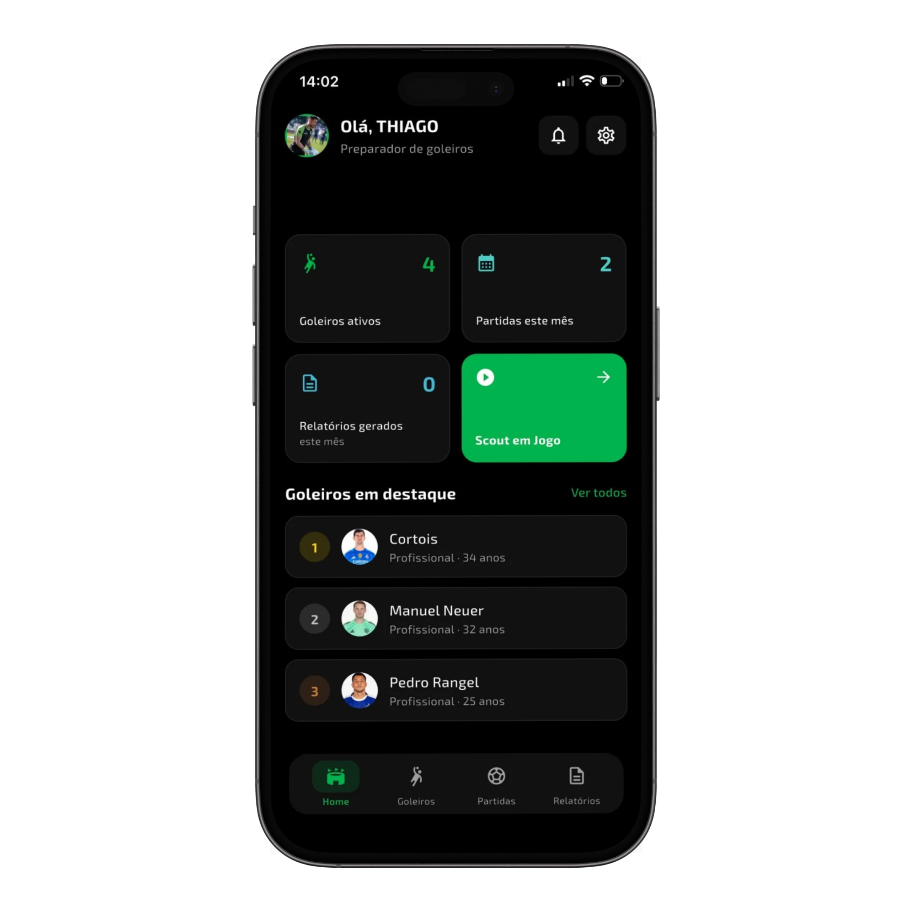

Prepare a partida
Cadastre seus goleiros, organize as categorias e adicione o confronto que vai acompanhar.
Análise de goleiros, dentro e fora de campo.
Cada ação conta. Registre o desempenho em campo e transforme suas observações em feedbacks que fazem o goleiro evoluir.
Disponível para Android e iPhone

Suas observações organizadas em um histórico para consultar e comparar.
Relatórios e gráficos para conversar com o atleta e a comissão técnica.
Acompanhe as partidas e identifique pontos fortes e aspectos a desenvolver.
Seu trabalho, mais organizado.
Da primeira marcação ao relatório pós-jogo, tenha as informações que precisa para orientar o próximo treino.

Telas do app • dados de demonstraçãoUm fluxo simples para manter o foco no que importa: o desempenho do seu goleiro.
Cadastre seus goleiros, organize as categorias e adicione o confronto que vai acompanhar.
Marque defesas, saídas de gol, reposições e outras ações conforme acontecem no jogo.
Consulte o relatório, compartilhe o feedback e acompanhe a evolução ao longo das partidas.
Para treinadores de goleiros, analistas e clubes.
Assinatura anual
Goleiros, partidas e relatórios reunidos para acompanhar o trabalho da base ao profissional.
De 12× de R$ 89,90
12× deR$ 49,90
R$ 598,80 no total por ano
Baixar e conhecer o appOferta apresentada no site original. Confira as condições e o valor vigente no aplicativo antes de assinar.
Escolha a loja do seu celular e conheça o Keeper Scout.
Antes de entrar em campo
O essencial para começar a usar o Keeper Scout.
Para treinadores e preparadores de goleiros, analistas e clubes, das categorias de base ao profissional. Você pode acompanhar um atleta ou organizar vários goleiros por equipe e categoria.
Você marca as ações do goleiro conforme elas acontecem, como defesas, saídas e reposições. O aplicativo organiza os registros para a análise após a partida.
Os relatórios reúnem as ações registradas, gráficos e um resumo do desempenho. Essas informações ajudam a preparar feedbacks e orientar o planejamento dos treinos.
O histórico permite consultar os jogos e acompanhar o desempenho ao longo do tempo, identificando pontos fortes e aspectos a desenvolver.
O Keeper Scout está disponível para Android e iPhone, em português. Consulte os requisitos de compatibilidade na loja do seu aparelho.